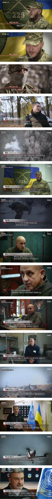
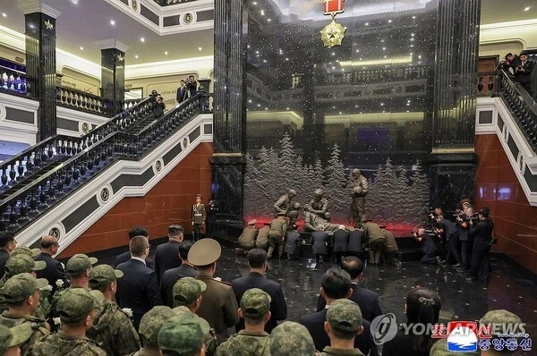

https://bbs.ruliweb.com/best/board/300143/read/76679003

직접 싸워본 우크라이나 군인들이 북한군 무시할수 없다고 입을 모으는 중
처음엔 의미없이 고기방패 세우다가 이젠 드론 전술도 학습하고
북한에서 정신세뇌 제대로 박힌 애들 + 정예부대로 선별했기 때문에
죽는걸 두려워하지 않음
그리고 절대로 포로가 되지말라고 수십, 수백번씩 학습받기 때문에
포로가 되느니 자폭해서 죽어버린다고 함
이런 식으로 다가가기만 해도 자폭해버림
우크라이나군도 겨우겨우 포로로 잡은건 단 2명뿐
(그 2명도 원래는 죽어도 포로가 될 생각 없었다고 함)
북한군의 전사자중 절반 이상이 자폭해서 죽은 미친 놈들이라고 함 ㄷㄷ

현재 북한은 전용 기념관도 세워주고 영웅이라고 추켜 세워주는 중
존나 기괴하고 섬뜩하다
전투력 올리고 돌아가서 김주애 갱뱅들어가겠네